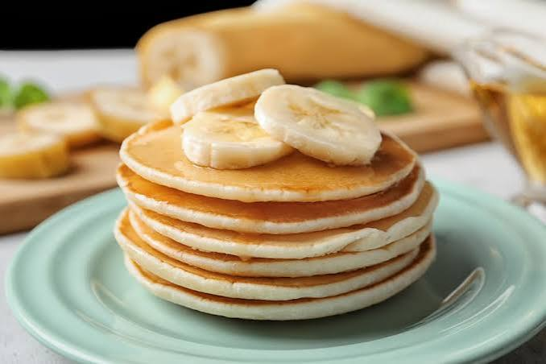

Los panqueques de banana y avena son una opción deliciosa y saludable para el desayuno. Son fáciles de preparar y no requieren ingredientes complicados. La combinación de la dulzura natural de la banana con la textura suave de la avena crea un desayuno nutritivo y satisfactorio. Además, son una excelente fuente de energía para comenzar el día con fuerza.

Ingredientes
- 1 unidad de Huevo
- 1 chorro de Aceite
- 3 cucharadas chicas (aprox. 30g) de Miel
- 4 cucharadas soperas de Avena
- 2 cucharadas soperas de Harina leudante
- Cantidad necesaria de Manteca o aceite para la sartén
Paso a Paso
- Pisá las bananas maduras en un bol.
- Agregá el huevo y mezclá bien.
- Sumá el aceite y la miel, integrando todo.
- Incorporá la avena y la harina leudante, mezclando hasta lograr una mezcla homogénea.
- Precalentá la sartén y agregá un poco de manteca o aceite.
- Verté la mezcla con una cuchara formando panqueques pequeños. Cociná a fuego medio y dales vuelta cuando aparezcan burbujitas.
- Retirá cuando estén dorados, evitando que se quemen estando atento a la hornalla.
Tips
Estar al lado de la hornalla para evitar que se quemen. Quedan muy ricos con dulce de leche y un café con leche.